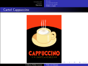
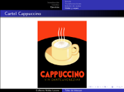

Movimiento Libre
Colección de ideas.
Presentaciones
Distribuciones GNU/Linux, entornos y programas libres
2010-10-19 23:55 - guivaloz


Para el XX Semana Académica en la Universidad Autónoma de Coahuila su servidor elaboró esta amena y visual presentación sobre las distribuciones GNU/Linux y los entornos de escritorio más populares.
Descargar
Edubuntu en la educación
2009-10-28 01:00 - guivaloz


Para la 16va. Semana Nacional de Ciencia y Tecnología en un evento organizado por el COECYT de Coahuila representando a InnovaTIC y al GULAG, elaboré la presentación “Edubuntu en la educación”.
Este material es una semblanza de lo que es el Software Libre, Ubuntu y Edubuntu, haciendo énfasis en su aplicación para el ámbito educativo. Se le hace la pregunta al público de que si sabe cuánto se gasta por comprar software privativo, si sabe que se estén usando copias ilegales del mismo y si es justo que sólo se enseñe una alternativa comercial habiendo otras libres. Concluye reflexionando sobre el potencial de la Comarca Lagunera para integrarse a las Industrias de la Información y Comunicación.
Descargar
Audio y Video en GNU/Linux
2008-10-26 20:45 - guivaloz


Con motivo del VI Simposium Nacional de Sistemas Computacionales e Informática (SINASCI) organizado por el Instituto Tecnológico Superior de Lerdo elaboré esta sencilla presentación para mostrar las cualidades de los programas multimedia LAME, Audacity, FFMPEG, MPlayer, Xine y VLC. Todos son Software Libre.
Descargar
Consejos para una Informática Ecológica
2008-05-17 15:30 - guivaloz


Ante una nueva era donde hay más conciencia por la conservación del medio ambiente nos vemos en la necesidad de buscar mejores alternativas, más eficientes energéticamente hablando, de nuestros equipos informáticos. Las nuevas tecnologías del Kernel Linux, los fabricantes de equipos de cómputo y los usuarios debemos de hacer esfuerzos por lograr disminuir el consumo de energía en pro de nuestro mundo.
Descargar
Taller de Inkscape
2007-08-16 22:45 - guivaloz

 

Con motivo del aniversario del Grupo de Usuarios de GNU/Linux de La Laguna participaré con un Taller de Inkscape. Esta es una presentación breve que explica lo que es el dibujo vectorial, las ventajas del Inkscape y muestra los ejercicios hechos.